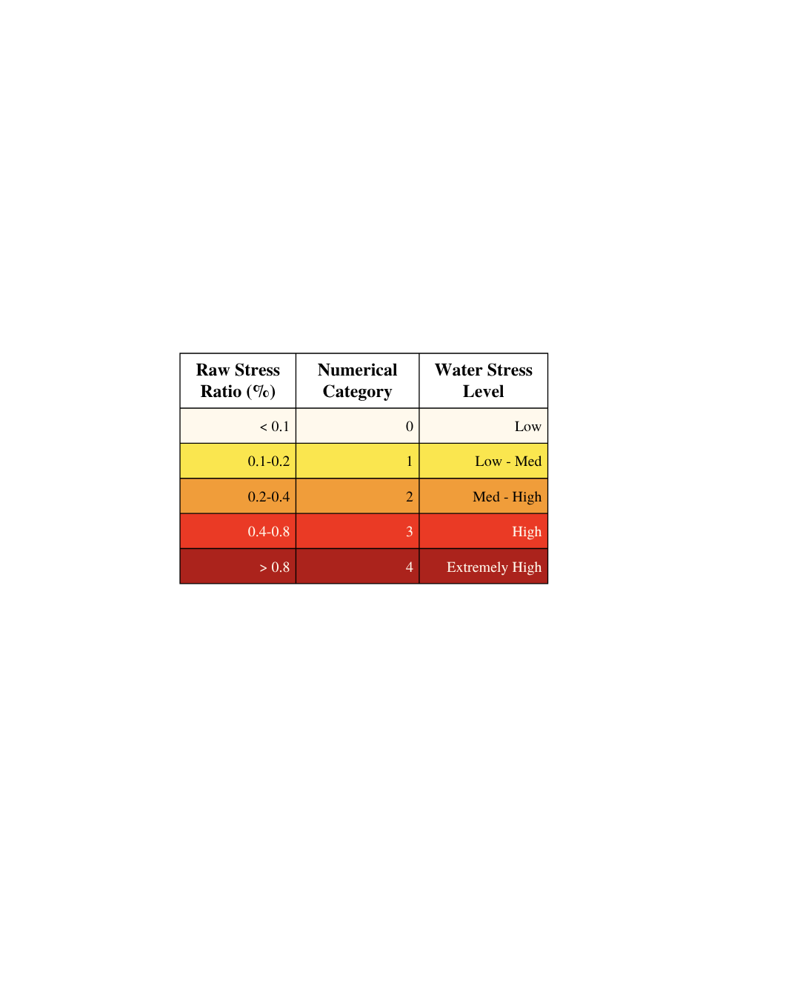
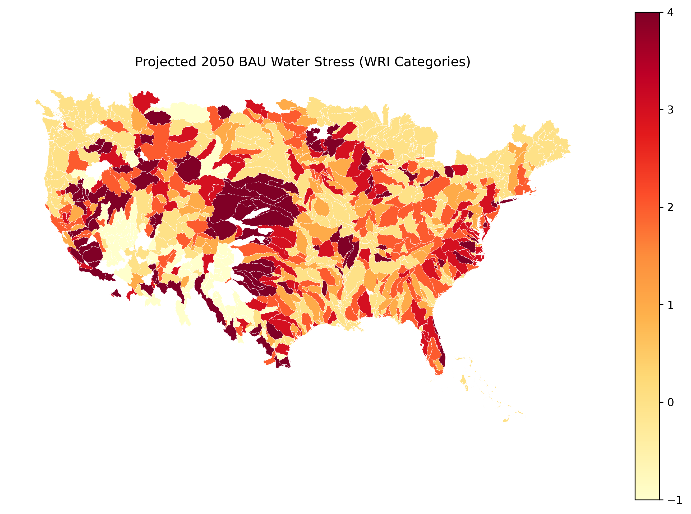
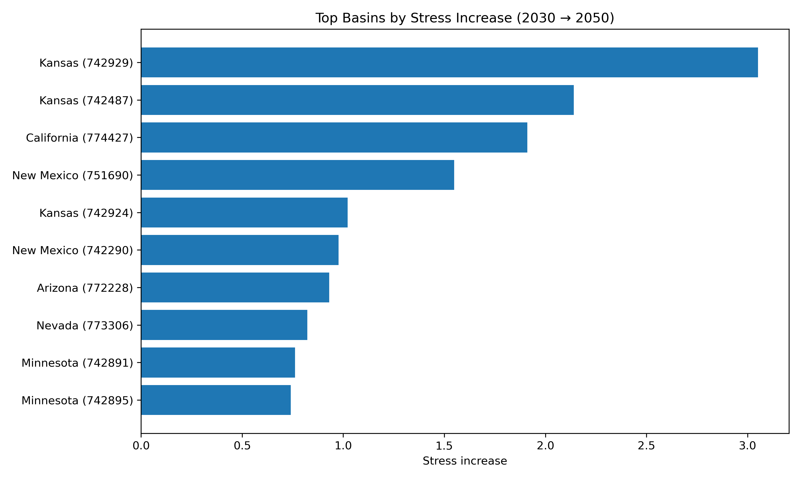
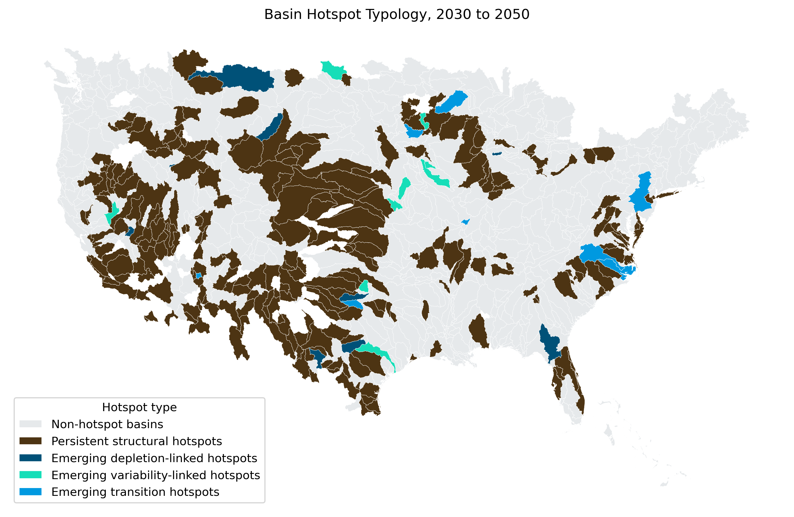
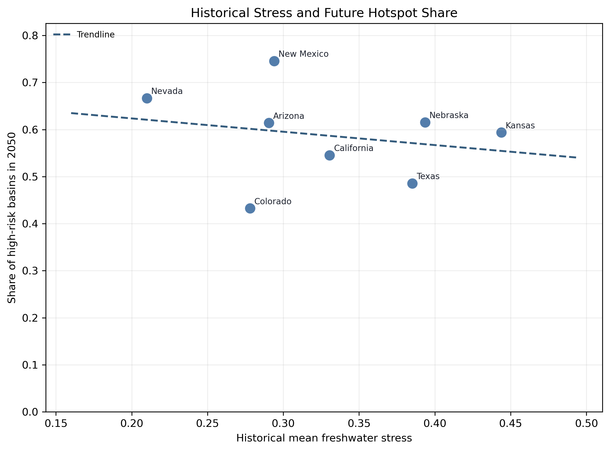
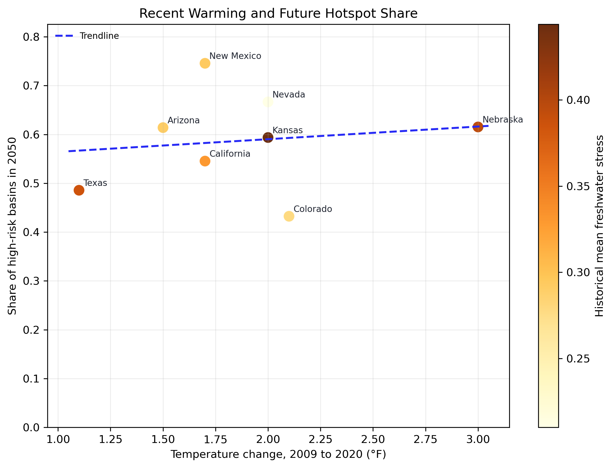

CHU DATS 4001 Capstone
Studying Freshwater Risk in the United States
This project identifies future freshwater scarcity hotspots by combining basin-level WRI projections with historical freshwater stress and selected climate and irrigation context. The central finding is that future water risk is concentrated in a smaller set of vulnerable basins rather than being evenly distributed nationwide, and that most of those future hotspots are persistent rather than entirely new by 2050.
Definitions
Core Terms
These definitions explain how water stress, hotspots, and basin geography are interpreted in this project.
What is water stress?
Water stress is the ratio of total water demand to available renewable water supply (WRI Aqueduct 4.0). Higher values mean that a larger share of available water is already being used.
In this project, basins with projected raw water stress of
0.4 and above are treated as future hotspots because that
threshold marks the beginning of WRI's high-stress category.

What are HydroBASINS?
A hydrological basin (HydroBASINS) is an area that drains to a common outlet such as a river, inland lake, or ocean. Each larger basin can be divided into smaller sub-basins at stream confluences, which makes basins a natural unit for studying freshwater scarcity because water availability and use are linked across the same drainage system. WRI Aqueduct 4.0 uses HydroBASINS level 6 sub-basins.
Basin-level vs state-level
The main analysis uses HydroBASINS level 6 hydrological subbasins because freshwater scarcity is defined using WRI basin variables. Datasets from NOAA and USGS that are more naturally organized by state are used only as contextual supporting evidence.
Methods
What is this showing?
This project is designed to answer where future freshwater hotspots are located, how those hotspots change over time, and what supporting context helps interpret those patterns.
Why state summaries still appear
Some supporting datasets are easier to compare at the state level, so state summaries are used to show broader regional context. They are not meant to replace the basin analysis and should be read as contextual support rather than exact hydrologic measurement.
Important limitation
Some hydrobasins cross state borders, so state-level summaries should be interpreted as broad approximations rather than exact hydrologic measurements. That is why the clearest findings in this project come from basin maps and basin rankings, with state-level context used only to help interpret patterns.
Data sources (summary)
WRI Aqueduct provides future basin-level projections for 2030 and 2050 under a business-as-usual scenario. IWA provides historical freshwater stress from 2009 to 2020. NOAA temperature and USGS irrigation data are used to support state-level context.
Research Framing
What is this project asking?
Which U.S. basins are projected to face the highest future water stress in 2030 and 2050, how does that risk change over time, and what historical and regional context helps interpret those hotspot patterns?
1. Where are the future hotspots?
Identify which basins show the most serious projected BAU water stress and where those hotspot patterns cluster geographically.
2. How does risk change over time?
Compare 2030 and 2050 stress patterns and isolate the smaller subset of basins where risk intensifies most clearly under BAU conditions.
3. What helps interpret future risk?
Use historical freshwater stress and selected state-level irrigation context to interpret why some hotspot-heavy regions stand out more than others, while keeping the main findings anchored at the basin level.
Analysis Question 1
Where are the future hotspots?
A high-risk basin in this project is one that crosses the 2030 BAU raw
water-stress threshold of 0.4. This section focuses on the
broad geography of future scarcity and the basins that stand out most
clearly within that national pattern.


Regional Case Study
The Southwest
The Southwest is the clearest regional concentration of future hotspot basins in this project. Arizona, Nevada, New Mexico, and California all stand out repeatedly in the basin maps, which makes the western U.S. the strongest geographic anchor for the larger national hotspot pattern.
This regional zoom-in matters because it shows that future scarcity is not simply rising everywhere at once. Instead, it is clustering in a smaller set of basins where structural pressure appears to stay elevated across both projection horizons.
Analysis Question 2
How does future risk change over time?
Future freshwater risk does not intensify everywhere in the same way. The clearest national pattern is persistence in already vulnerable basins, combined with more selective worsening in a smaller subset by 2050.
The strongest interpretation here is not that the entire country shifts dramatically upward between 2030 and 2050. Instead, future risk appears to persist in many of the same vulnerable regions while a smaller set of basins experiences sharper intensification.

Taken together, the typology results suggest three broad patterns: persistent hotspot basins that remain high-risk in both years, a smaller set of emerging basins that newly cross the threshold by 2050, and a large majority of basins that remain below hotspot status in both periods.
Predictive Modeling
Two regression models were used to interpret future basin risk within the WRI framework. The linear regression explained variation in projected 2030 BAU water stress and showed that projected depletion had the strongest association with future stress R² = 0.819 The logistic regression classified whether a basin would be high-risk in 2030 and performed very strongly accuracy = 0.96, ROC-AUC = 0.991. Together, these models suggest that future hotspot patterns are structured rather than random.
Analysis Question 3
What helps interpret hotspot patterns?
This section uses historical freshwater stress, irrigation-heavy state context, and recent warming patterns to help interpret hotspot concentration. These are supporting contextual views rather than causal proof, and they are shown at the state level because the external datasets do not align perfectly with basin boundaries.


Historical freshwater stress provides the strongest supporting context, while irrigation-heavy state patterns and recent warming add broader regional interpretation. Together, they suggest that future vulnerability is tied to broader structural pressure rather than a single variable.
Why This Matters
Why does this analysis matter, and what should be kept in mind?
Why it matters
Future freshwater risk matters for agriculture, regional planning, urban growth, and long-term water management. The most vulnerable places are not simply places that look stressed in one year; they are places where risk remains high or intensifies over time, which makes early identification important for long-run planning.
Because most 2050 hotspots are persistent rather than entirely new, these findings suggest that many future water-risk regions can already be identified today, making earlier intervention more possible than the idea of sudden crisis would imply.
Limitations
-
IWA is at the HUC12 level, while the main WRI hotspot analysis is
at the
pfaf_idbasin level. - State-level historical and irrigation summaries hide some basin-level variation.
- WRI future values are scenario-based BAU projections, not direct observations.
- Supporting context figures are descriptive and interpretive, not causal proof.